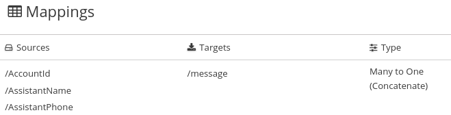
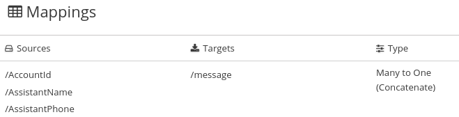

Combining multiple source fields into one target field
In a data mapper step, you can combine multiple source fields into one
compound target field. For example, you can map the FirstName and LastName
fields to the CustomerName field.
For the target field, you must know what type of content is in each part of this compound field, the order and index of each part of the content, and the separator between parts, such as a space or comma. See Example of missing or unwanted data.
-
In the Target panel, click the field into which you want to map more than one source field.
-
In the Sources panel, if there is a field that contains the fields that you want to map to the target field, then click that container field to map all contained fields to the target field.
To individually select each source field, click the first field that you want to combine into the target field. For each of the other fields that you want to combine into the target field, hover over that field, and press CTRL-Mouse1 (CMD-Mouse1 on MacOS).
When you are done you should see a line from each of the source fields to the target field.
In the Mapping Details panel, under Sources, the data mapper displays the default multiplicity transformation, which is Concatenate. This indicates that execution of the mapping applies the Concatenate transformation to the values in the selected source fields and maps the concatenated value to the selected target field.
For information about other transformations that you can apply to multiple source values see About transformations on multiple source values Also under Sources, there is an entry for each source field that you selected.
-
In the Mapping Details panel, configure the mapping as follows:
-
Under Sources, in the Delimiter field, accept or select the character that the data mapper inserts in the target field between the content from different source fields. The default is a space.
-
Optional. In each source field entry, you can click Add Transformation to apply a transformation to the source field value before it gets mapped to the target field.
-
Under Sources, check the order of the entries for the source fields that you selected. The entries must be in the same order as the corresponding content in the compound target field.
If the entries are not in the correct order, drag and drop source field entries to achieve the same order. The data mapper automatically updates the index numbers to reflect the new order.
If you mapped a source field to each part of the compound target field, skip the next step.
-
For each source field entry that does not already have the same index as the corresponding data in the target field, edit the index to be the same. Each source field entry must have the same index as the corresponding data in the target field. The data mapper automatically adds padding fields as needed to indicate missing data.
If you accidentally create too many padding fields, click the trash-can icon on each extra padding field to delete it.
-
Optional. Under Targets, click Add Transformation to map the content into the target field and then apply a transformation.
-
-
Optionally, preview the data mapping result:
-
In the upper right of the data mapper, click
 and select
Show Mapping Preview to display a text input field on each source
field for the currently selected mapping and a read-only result field
on the target field of the currently selected mapping.
and select
Show Mapping Preview to display a text input field on each source
field for the currently selected mapping and a read-only result field
on the target field of the currently selected mapping. -
In the source data input fields, enter text. Click outside the text box to display the mapping result in the read-only field on the target field.
If you reorder the source fields or add a transformation to the mapping then the result field on the target field reflects this. If the data mapper detects any errors, it displays informative messages at the top of the Mapping Details panel.
-
Hide the preview fields by clicking
again and selecting
Show Mapping Preview.If you redisplay the preview fields, any data that you entered in them is still there and it remains there until you exit the data mapper.
-
-
To confirm that the mapping is correctly defined, in the upper right, click
 to display the mappings defined in
this step. A mapping that combines the values of more than one source field
into one target field looks like this:
.
to display the mappings defined in
this step. A mapping that combines the values of more than one source field
into one target field looks like this:
.You can also preview mapping results in this view. Click
, select
Show Mapping Preview, and enter text as described in the previous step.
Preview fields appear for only the selected mapping. Click another
mapping in the table to view preview fields for it.
Example of adding padding fields: Separating one source field into multiple target field.
Although that example is for a one-to-many mapping, the principles are the same.